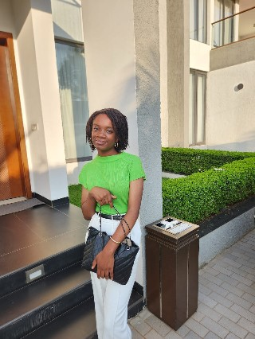

A Propos de moi
Bonjour! Je m'appelle Marie MULUNDA et je suis étudiante dynamique et motivée en informatique à UDBL. Passionnée par le developpement web, l'intelligence artificielle, et le design graphique, je suis constamment à la recherche de nouvelles opportunités d'apprentissage et de défis stimulants.
Au cours de mes études, j'ai développée des solides compétences en programmation. Je suis une personne rigoureuse,créative et j'aime travailler en équipe pour etteindre des objectifs communs. Mon objectif est de contribuer à des projets innovants trouver un stage et maitriser le Framework Laravel.
Mes Compétences
| CATEGORIE | COPETENCES | NIVEAU |
|---|---|---|
| Programmation | HTML,CSS,JavaScript,Python | Avancé |
| Design | Figma,Photoshop(bases) | Intermediaire |
| Langues | Français(natif),Anglais(fluide) | Avancé |
| Outils | Git,VS Code,Suite Office | Avancé | Soft Skills | Communication,Résolution de problème,Autonomie | Expert |